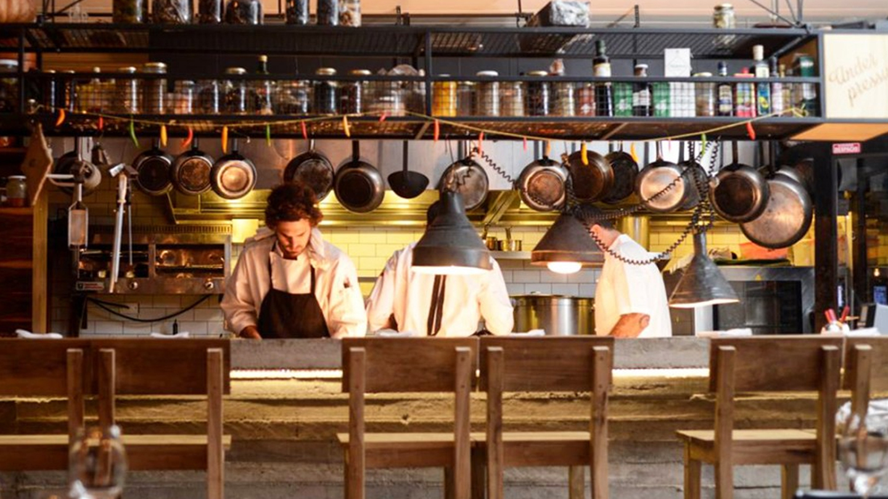

¿Quienes Somos?

Somos un emprendimiento familiar.
Tres hermanos: Juan Pablo, Juan Andres y Juan Manuel
Que Cocinamos para nuestros clientes desde 1995.
Nos apasiona lo que hacemos y lo hacemos con mucho amor,
justamente el amor es el secreto de nuestro exito.
Juan, nuestro abuelo, fue el que nos enseño todo lo que sabemos.
Es por eso que nuestra empresa intenta ser un homenaje
a ese gran hombre que nos enseño a amar la cocina